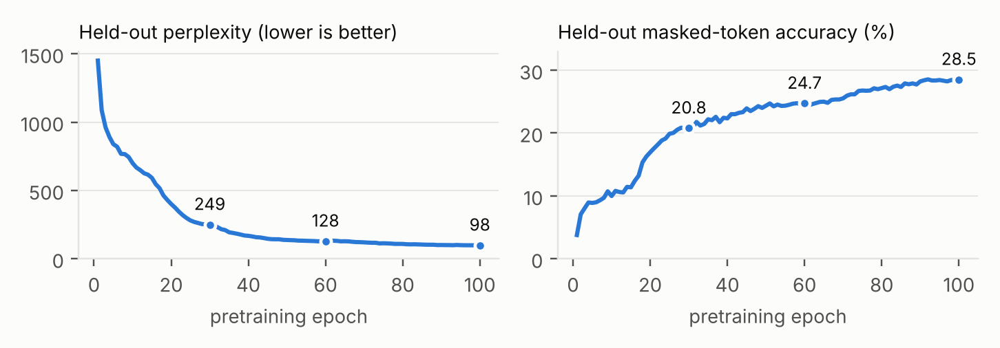
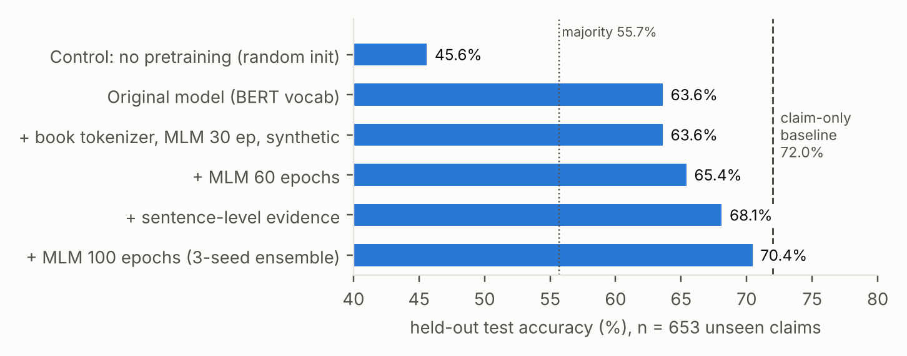
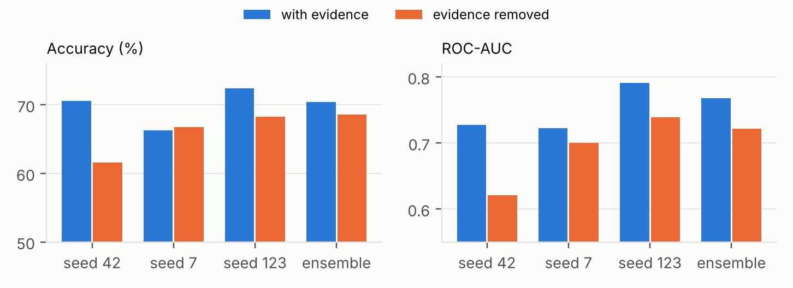

The labelled set (combined_train_v2.csv) has 4,569 rows of claims about characters from The Count of Monte Cristo and In Search of the Castaways, each tagged with the character and a label (55.8% consistent). The rows contain only 1,669 distinct claims: the rest are paraphrased copies with filler such as “Moreover, …” or “… according to the text.” Claims typically summarise a character's arc (“He spoke only Italian and Latin and relied on Dantès to translate…”), and 66% begin with a pronoun.
The original 97.56% validation accuracy came from a random 80/20 row split. Grouping each claim with its copies (token-set Jaccard ≥ 0.6 within a book, after stripping fillers) showed that about 75% of validation rows had a near-copy in training. A TF-IDF + logistic-regression model on the claim text alone, which never sees the book, scored 94.75% on that split.
All results below use a grouped split (StratifiedGroupKFold): train 3,263 rows / 1,192 claim groups, validation 653 / 239, held-out test 653 / 238, with no claim group in more than one part. Checkpoints and decision rules are chosen on validation. The claim-only baseline is reported next to every model, because it measures how far the labels can be guessed from wording alone. On unseen claims it still reaches 72.0%, so the dataset carries strong lexical artifacts.
Retrieval. The novels are split into 200-word passages (50-word overlap). A query is scored by 0.6 · cosine similarity (all-MiniLM-L6-v2) + 0.4 · max-normalised BM25, restricted to the claim's book. The MiniLM sentence encoder is the only pretrained component, and it is used for retrieval only. Because most claims start with “He” or “She”, the character name is prefixed to both the query and the claim ("Villefort: He …").
Sentence-level evidence (bug fix). The original input concatenated the top three passages (≈840 tokens), but the encoder reads 256 tokens, so truncation left the model only the first quarter of the top passage. The new selector splits the top eight passages into sentences and scores each by cosine similarity to the claim, plus 0.1 if it names the character. It then packs the best sentences into the token budget in reading order.
Encoder. A pre-LayerNorm Transformer encoder written in PyTorch (4 layers, 4 heads, d = 256, FFN 1024, learned positions, segment embeddings), with 6.06M parameters. Input is [CLS] evidence [SEP] character: claim [SEP], and a linear head on [CLS] predicts the label.
Book tokenizer. An 8,000-token WordPiece vocabulary trained on the six book files in the corpus (the two labelled novels, The Hound of the Baskervilles and three true-crime texts), which are also the MLM pretraining corpus. The original setup borrowed BERT's 30,522-token vocabulary, whose embedding table alone was 7.8M of the 10.8M parameters.
Masked-LM pretraining. BERT-style MLM on 938k tokens of book text: 15% masking (80/10/10), two-segment 256-token windows, and a decoder tied to the input embeddings. Training uses AdamW (peak lr 7 × 10−4, 6% warm-up, linear decay) for 100 epochs, about 5.5 CPU-hours on two cores. The last 2% of tokens are held out.
Synthetic contradiction pairs. Real claims can be classified from wording, which gives a classifier no reason to read the evidence. We therefore mine 2,400 self-supervised examples from the books. A consistent example is a book sentence with light, meaning-preserving edits. A contradict example is the same sentence with one fact changed: two characters' roles swapped, a name replaced, a number changed, or a negation flipped. Both members of a pair share their wording, so only comparison with the evidence can separate them.
Fine-tuning. lr 10−4, label smoothing 0.1, batch 16, up to 14 epochs with early stopping on validation macro-F1. Sampling is group-balanced: one random copy per claim group per epoch, so heavily duplicated claims are not over-weighted.

| Held-out test, n = 653 rows / 238 unseen claim groups | Acc. | Macro F1 | ROC-AUC | Acc. without evidence |
|---|---|---|---|---|
| Majority class | 55.7 | — | 0.500 | — |
| Claim-only TF-IDF baseline (never reads the book) | 72.0 | 0.716 | 0.817 | — |
| Original model (BERT vocab, no pretraining, 10.8M) | 63.6 | 0.590 | 0.669 | — |
| Control: MLM-60 recipe, random init (no pretraining) | 45.6 | 0.354 | 0.568 | 55.7 |
| Book tokenizer + MLM 30 ep + char prefix | 62.3 | 0.616 | 0.632 | 64.3 |
| + synthetic pairs | 63.6 | 0.625 | 0.656 | 53.9 |
| + MLM 60 epochs | 65.4 | 0.649 | 0.694 | 66.6 |
| + sentence evidence, 2× synthetic | 59.1 | 0.590 | 0.664 | 56.4 |
| + sentence evidence, 1× synthetic | 68.1 | 0.681 | 0.725 | 68.9 |
| + MLM 100 epochs, single seeds (mean ± sd, n = 3) | 69.8 ± 3.1 | 0.697 | 0.747 ± 0.038 | 65.5 ± 3.5 |
| + MLM 100 epochs, 3-seed ensemble (final) | 70.4 | 0.703 | 0.768 | 68.6 |

With the same architecture and training data (learning rate and dropout retuned for random initialisation), the randomly initialised model reaches 45.6%, below the majority class, while the MLM-pretrained encoder reaches 65.4%, a gain of about 20 points. With only 1,192 training claim groups, a randomly initialised Transformer cannot learn what the words mean. The unlabelled novels supply that knowledge for free. Longer pretraining also helped at fixed data: 30 → 60 epochs raised accuracy from 63.6% to 65.4%, and 60 → 100 epochs (with sentence evidence) from 68.1% to a 69.8% seed mean. The MLM loss had not converged at 100 epochs.

Without synthetic pairs, removing the passages did not hurt (62.3% with, 64.3% without): the model ignored the book. Adding the pairs made it depend on them (63.6% → 53.9% without). In the final ensemble, evidence lifts ROC-AUC from 0.721 to 0.768 and accuracy by 1.8 points. A cluster bootstrap over test claim groups gives a 95% CI of [−3.6, +7.2] points for the accuracy effect, so it is not significant. Individual seeds range from a 9-point benefit (seed 42) to none (seed 7). The model therefore uses evidence to rank its confidence, but much of its accuracy still comes from the claim text.
The ensemble trails the baseline by 1.6 points. The paired cluster-bootstrap 95% CI for the difference is [−8.0, +4.8], so the two are statistically indistinguishable on this test set. The baseline keeps a clear AUC advantage (0.817 vs 0.768). With an earlier model, stacking it with the baseline (logistic regression fit on validation) did not beat the baseline alone (71.5%). Since the baseline reads no evidence at all, matching it means the from-scratch model learns the lexical cues and some evidence use, but not enough evidence use to overcome the artifacts.
Fine-tuning variance is large: seeds differ by up to 6 points of accuracy, and two recipes with near-identical validation F1 (0.689 vs 0.699) differed by 9 points on test. Single-run comparisons on 238 claim groups are therefore unreliable, which is why the final model is reported as a seed mean and an ensemble. Doubling the synthetic data, so that synthetic examples outnumbered real ones 1.5 : 1, hurt badly (59.1%): the model drifted toward the synthetic task. A val-tuned decision threshold did not transfer to test and is not used.
Dataset/test.csv (60 rows) is unlabelled and cannot be scored.All code, the pretrained encoder, the three fine-tuned seeds, the experiment log (exp_results.jsonl) and the final evaluation (final_eval.json) are in the repository. Pipeline: book_tokenizer.py → pretrain_mlm.py → synth_data.py → main.py. An interactive demo (streamlit run app.py) shows the selected evidence, the verdict, and the verdict without evidence for any claim.